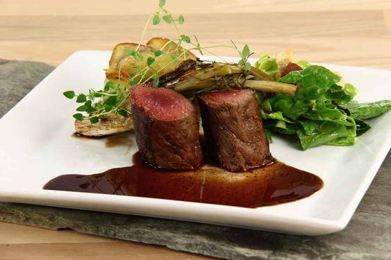

Rådyr jaktsesong starter fra 25. september helt frem til 23.
desember. Man må utnytte denne tiden for å prøve noen av de delikate rettene som
inneholder rådyrkjøtt. Om du drar til slakteren eller jakter dine egne dyr, så er
viltsmaken fra Rådyrfilet med honningbagte forårsløg en must-try.
• 16 forårsløg
• 1 bdt. frisk timian
• 4 spsk. akaciehonning
• 6 spsk. mørk balsamico
• havsalt
• friskkværnet sort peber
• 800 g. kartofler
• 2 spsk. olie
• salt
• peber
• 800 g. rådyrfilet
• 25 g. smør
• salt
• pepper